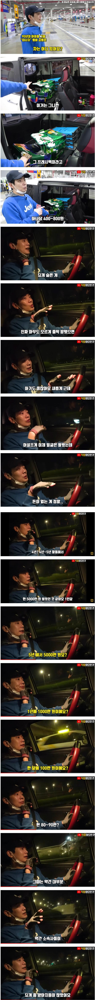

쿠팡맨 하고 있다는 90년대 아이돌
댓글
팬이면 바로 알아볼 듯 ㄷ
그러게 당시에도 좀 쩌리그룹이었을텐데
쩌리는 아니여. 1티어는 아니었어도 쩜오는 되었음.
신인상도 받고 데뷔곡 도 / 후속곡 타임으로 꽤 인기있었음.
일단 타임 노래가 존나 좋음 ㅋㅋ
그 당시가 HOT 젝키 전성기여서 그렇지, 나름 꽤 인기 있던 그룹임.
지금 걸그룹으로 보면 미야오 키키 정도 될 듯
이름 들어본 정도면 절대 쩌리는 아님 진짜 사라진 걸그룹 모음글 보면 이런 애들도 있었나 하는게 태반인데
그룹명만 유명함
태사자 인 더 하우스라서
퇴사자 인더 하우스
태사자 인더 하우스
방구석 태사자 ㅋㅋㅋ
그래도 이름 알려질정도면 이래저래 꽤 벌었을텐데
소속사가 제대로 빨아먹었나보네
노예계약 관행 벗어난게 얼마 안됨
https://youtu.be/yyLOx7Weiow?si=FrtWv2nvUgfUvlZZ
작년쯤에 열린음악회에서
본인들 최고 히트곡 부르셧던데
막내가 80년생이던데
77, 78, 78, 80 멤버들 나이가 이렇네
최고 히트곡은 타임이지
아는노래 하나도 없을거라 생각했는데 1:17 부터 들어본거네 ㅋㅋㅋㅋㅋ

은지원이 말한거네.. 얼굴은 알려졌는데 돈없는 사람이 최악이라고..
바람속을 가르는~
그건 젝키
바람처럼 스쳐 가는 정열과 낭만아~
그건 캔
요것도 살짝 옛날이고, 근황의 근황은 방송 몇번 출연하시고 작은 사업 운영한다 하심
저 하늘을 날아가~ 먼 곳으로 날아가~
그건 태사자
야이야이야~~그렇게 살아가고~~
그건 지오디
태사자 인더 하우스!
태사자 진짜 오랜만에 듣는 이름이네
당시 옷 가장 잘입었던 아이돌 그룹
자의 공
어찌하여..
쿠팡알바 새벽배송도
갔다놓기만하는 알바도 있던데 반대로 갔다주면 집앞에 갔다놓는 배송도 따로있고
'갖'다
같
와... 태사자...
진짜 맴버들 옷빨 하나는 누구도 못따라가겠다 싶을정도로 모델포스였는데...
태사자가 활동하던시기가 조폭들이 기획사존나하던시절이라. 조폭이아니더라도 계약조건들이 ㄹㅇ 조폭기획사 계약서들이 기본값이던시절 ㄷㄷ
니가 떠난 바닷가에 눈물이 마를 때까지 (다마를때까지)
태사자 인더 하우스
태사자라는 그룹명은 기억나는데 얼굴도 알아보나